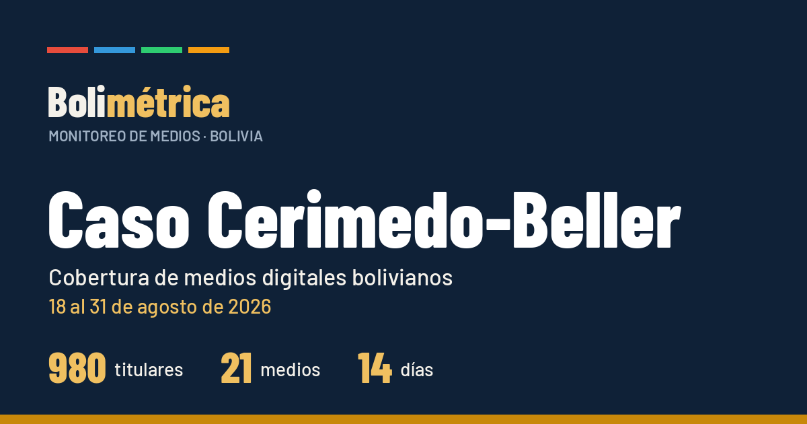

Publicaciones
Informes temáticos sobre la cobertura de los medios digitales bolivianos.

Informe temático
Caso Cerimedo-Beller
Cobertura de medios digitales bolivianos · 18 al 31 de agosto de 2026.
Abrir informe →
Próximamente: nuevas publicaciones